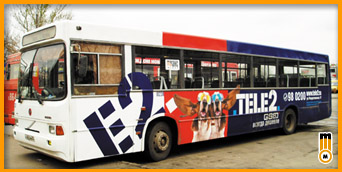

трамваи
троллейбусы
автобусы
маршрутные такси
корпоративный транспорт
последние работы



Автобусы – один из самых распространенных видов городского транспорта в Нижнем
Новгороде.
Они и маршрутные такси выступают
в роли «связующего звена» между заречной и нагорной частью
Нижнего Новгорода, осуществляя 90% трафика между нижней и верхней частью города.
в роли «связующего звена» между заречной и нагорной частью
Нижнего Новгорода, осуществляя 90% трафика между нижней и верхней частью города.
АВТОБУС КАК НОСИТЕЛЬ РЕКЛАМЫ


Приемлемая, по сравнению с электротранспортом,
цена.
Самый распространенный вид транспорта.
Большое количество маршрутов, есть из чего выбрать.
цена.
Самый распространенный вид транспорта.
Большое количество маршрутов, есть из чего выбрать.

Несколько большее, по сравнению
с электротранспортом, загрязнение
поверхности.
с электротранспортом, загрязнение
поверхности.

МАРШРУТЫ
№ 1
Пл. Минина и Пожарского – Щербинки
Следует:
пл. Минина и Пожарского – ул. Варварская – пл. Свободы – пл. Горького – ул. Б.
Покровская – пл. Лядова – пр-т Гагарина – пр-т Ак. Сахарова
№ 2
Верхние Печеры – Щербинки
Следует:
ул. Богдановича – Казанское ш. - Ул. Касьянова – ул. Верхнепечёрская – ул. Бринского
(обратно – ул. Лопатина) – Казанское ш. – ул. Родионова – Сенная пл. - ул. Белинского -
пл. Лядова –
пр-т Гагарина – пр-т Ак. Сахарова
№ 3
Пл. Свободы – «Красное Сормово»
Следует:
пл.Свободы - ул.Варварская - пл.Минина и Пожарского - Зеленский съезд -
Нижневолжская наб. - Канавинский мост - пл. Ленина – ул. Советская – Московское ш. –
ул. Героя Рябцева – ул. Ярошенко – ул. Чаадаева – ул. Мирошникова – ул. Циолковского –
ул. Культуры – ул. Коминтерна – ул. Баррикад (обратно ул. Свободы)
№ 4
Верхние Печеры – ул. Долгополова
Следует:
Верхние Печеры – ул. Долгополова
№ 5
Речной вокзал - Подновье
Следует:
Нижневолжская наб. – ул. Красная Слобода – наб. Гребного канала
№ 6
«Красное Сормово» - Торфопредприятие
Следует:
ул.Свободы (обратно ул.Баррикад) - ул.Коминтерна - ул.Культуры - ул.Федосеенко
№ 7
Мещерское озеро – Приокский
Следует:
Мещерский б-р – ул. Акимова – ул. Мурашкинская – ул. Советская – пл. Революции –
ул. Долгополова (обратно ул. Литвинова) – ул. Июльских дней – Комсомольская пл. – ул.
Молитовская – ул. Баумана – ул. Героя Попова
№ 8
«Красное Сормово» - 7-й микрорайон (полукольцевой, навстречу
35-му)
Следует:
Ул. Свободы – ул. Коминтерна – ул. Культуры – ул. Федосеенко - … - пр-т
Кораблестроителей – пр-т 70 лет Октября – ул. Светлоярская – ул. Культуры – ул.
Коминтерна – ул. Баррикад
№ 9
Пл. Минина и Пожарского – ЗКПД-4
Следует:
Пл. Минина и Пожарского – Зеленский съезд – Нижневолжская наб. – Канавинский мост –
пл. Ленина – ул. Советская – ул. Должанская – ул. Мурашкинская – ул. Акимова – ул.
Куйбышева – Сормовское ш. – ул. Коминтерна – пер. Союзный – ул. Героя Сутырина – ул.
Баренца – ул. Стрелкова – пр-т Кораблестроителей – дорога на ЗКПД-4
№ 10
Московское шоссе – Дубравная
Следует:
л. Героя Рябцева – ул. Героя Давыдова – ул. Просвещенская – ул. 50 лет Победы
(обратно – ул. Страж Революции) – ул. Коминтерна – ул. Свободы – ул. Хальзовская – ул.
КИМа –
ул. Ясная – ул. Землячки – ул. Ужгородская
№ 11
Ул. Дружаева – Аэропорт
Следует:
ул.Пермякова – пр-т Бусыгина – ул.Дьяконова – пр-т Октября – ул.Веденяпина –
Южное шоссе – ул. Гайдара – ул.Ореховская - ул.Безводная
№ 15
Метро «Автозаводская» – Ивановка
Следует:
Пр-т Ленина – пр-т Ильича – ул. Красноуральская (обратно ул. Краснодонцев) –
пр-т Молодёжный – ул. Восточная
№ 17
Ул. Долгополова – пос. Березовский
Следует:
ул.Литвинова (обратно пл.Революции – ул.Прокофьева – ул.Долгополова) – ул.Советская –
Московское ш. – ул.Кузбасская – ул.Электровозная
№ 19
Высоково - Дачный
Следует:
Высоковский пр-д – ул. Республиканская – ул. Полтавская – ул. Белинского – Сенная пл. –
ул. Минина – пл. Минина и Пожарского – Зеленский съезд – Нижневолжская наб. –
Канавинский мост – пл. Ленина – ул. Советская – ул. Коммунистическая – ул.Июльских дней
– пр-т Ленина
№ 20
Кузнечиха - Аэропорт
Следует:
ул.Генерала Ивлиева – ул.Козицкого – ул.Шишкова – ул. Богородского (обратно ул.Ванеева –
ул.Козицкого) – пл.Советская – ул.Ванеева, – пл.Свободы – ул.Варварская – пл.Минина и
Пожарского – Зеленский съезд – Нижневолжская наб. – Канавинский мост – пл. Ленина -
ул.Советская – пл.Революции – ул.Прокофьева – ул.Долгополова (обратно ул. Литвинова) –
ул. Июльских Дней – пр-т Ленина – ул.Веденяпина – Южное шоссе – ул. Гайдара –
ул.Ореховская – ул.Безводная
№ 22
Ул. Долгополова – Березовая пойма
Следует:
ул.Литвинова (обратно пл.Революции – ул.Прокофьева – ул.Долгополова) – ул.Советская –
Московское ш.
№ 23
Дубравная - Козино
Следует:
Пос. Козино
№ 24
Пл. Минина и Пожарского - Афонино
Следует:
Пл. Минина и Пожарского – ул. Минина – Сенная пл. ул. Родионова – Казанское ш.
№ 25
Нефтебаза – «Красное Сормово»
Следует:
… – ул. Коминтерна – ул. Баррикад (обратно – ул. Свободы)
№ 26
Кузнечиха – ул. Долгополова
Следует:
ул.Генерала Ивлиева – ул.Козицкого – ул.Шишкова – ул.Богородского (обратно ул.Ванеева –
ул.Козицкого) – пл.Советская – ул. Бекетова – пр-т Гагарина – пл. Лядова – ул. Б.
Покровкая –
пл. Горького – ул. Маслякова (обратно ул. М. Покровская) – Похвалинский съезд –
Канавинский мост – пл. Ленина – ул. Советская – пл. Революции (обратно ул. Литвинова) –
ул. Прокофьева
(обратно ул. Литвинова) – ул. Долгополова (обратно ул. Литвинова)
№ 27
Автостанция «Сенная» - Сады
Следует:
Ул. Родионова – Сенная пл. - ул. Белинского – пл. Лядова – пр-т Гагарина – ул. Артельная
№ 28
Ул. Усилова – Щелоковский хутор
Следует:
ул.Фруктовая – ул.Родионова – пл.Сенная – ул.Горького – ул.Белинского – пл.Лядова –
пр-т Гагарина – ул.Бекетова – ул.Нартова – ул.Медицинская – ул.Братьев Игнатовых–
ул. Горбатовская
№ 30
Пл. Горького - Черепичный
Следует:
л.Горького – пл.Горького – ул.Б.Покровская – пл.Лядова – пр-т Гагарина – ул.Кемеровская
– ул.Кащенко – ул.Героя Шапошникова
№ 31
Ул. Парижской Коммуны – Нагулино
Следует:
ул.Ермолова – ул.Автоматная – ул.Прямая - ул.Некрасова – ул.Детская – ул. Пермякова –
пр-т Бусыгина – ул. Переходникова – пр-т Ленина – ул.Веденяпина – Южное шоссе –
ул.Гайдара –
ул. Ореховская – ул.Рельсовая – ул. Новополевая – Гавриловское ш.
№ 32
Ул. Дружаева - Космическая
Следует:
ул.Пермякова - пр-т Бусыгина - ул.Дьяконова - пр-т Октября - ул.Веденяпина – ул. Лескова
– ул. Маковского – ул. Мончегорская – ул. Космическая
№ 33
Ул. Дружаева – 6-я проходная ГАЗ
Следует:
ул. Дружаева – 6-я проходная ГАЗ
№ 37
Кузнечиха – Ближнеконстантиново
Следует:
ул. Генерала Ивлиева – ул. Козицкого – ул.Шишкова – ул. Богородского (обратно ул.Ванеева
– ул.Козицкого) – пл.Советская – ул. Бекетова – пр-т Гагарина – ул. Ларина (обратно ул.
Кемеровская) – ул. Кащенко – ул. Ларина – ул. Полевая
№ 38
Кузнечиха – ул. Долгополова
Следует:
Мкр-н «Кузнечиха-2» – ул. Козицкого – ул. Шишкова (обратно – 3-й Нагорный мкр-н) –
Универсам (обратно – Институт развития образования) – Советская пл – ул. Ванеева – Пл.
Свободы – пл. Минина и Пожарского – речной вокзал – ул. Стрелка – Московский вокз –
Центральный рынок (обратно Дом торговли) – Конд. Ф-ка им. 1 мая
№ 40
Верхние Печеры – Южное шоссе
Следует:
Ул. Богдановича – Казанское ш. – ул. Касьянова – ул. Верхнепечёрская – ул. Лопатина –
Казанское ш. – ул. Родионова – Сенная пл. – ул. Минина – пл. Минина и Пожарского – ул.
Варварская –
пл. Свободы – ул. Горького – пл. Горького – ул. Б. Покровская – пл. Лядова – Окский
съезд – Молитовский мост – Комсомольская пл. - пр-т Ленина - ул.Веденяпина - Южное шоссе
№ 41
Кузнечиха – Мещерское озеро
№ 43
Щербинки – ул. Долгополова
Следует:
Пр-т Ак. Сахарова – пр-т Гагарина – пл. Лядова – ул. Б. Покровская – пл. Горького –
ул. Маслякова (обратно ул. М. Покровская) – Похвалинский съезд – Канавинский мост – пл.
Ленина –
ул. Советская – пл. Революции (обратно ул. Литвинова) – ул. Прокофьева (обратно ул.
Литвинова) –
ул. Долгополова (обратно ул. Литвинова)
№ 44
Московское шоссе – Дубравная
Следует:
ул. Героя Рябцева – ул. Ярошенко – ул. Чаадаева – ул. Мирошникова – ул. Циолковского –
ул. Светлоярская – пр-т 70 лет Октября – ул. Стрелковая – ул. Планировочная – ул. Новые
Пески –
ул. Ясная – ул. Землячки – ул. Ужгородская
№ 45
Верхние Печеры – ЗКПД-4
Следует:
Ул. Богдановича – Казанское ш. – ул. Касьянова – ул. Верхнепечёрская – ул. Лопатина –
Казанское ш. – ул. Родионова – Сенная пл. – ул. Минина – пл. Минина и Пожарского –
Зеленский съезд - Нижневолжская наб. - Канавинский мост - пл. Ленина – ул. Советская –
Московское ш. –
ул. Героя Рябцева – ул. Ярошенко – ул. Чаадаева – ул. Мирошникова – ул. Циолковского –
ул. Светлоярская – пр-т 70 лет Октября – пр-т Кораблестроителей – дорога на ЗКПД-4
№ 48
Ул. Долгополова – Сортировочный
Следует:
ул.Литвинова (обратно пл.Революции – ул.Прокофьева – ул.Долгополова) – ул.Советская –
Московское ш. – … – ул. Ухтомского – ул. Электровозная – ул. Движенцев – ул.
Гороховецкая
№ 51
Кузнечиха – ЗКПД-4
Следует:
ул.Генерала Ивлиева – ул.Козицкого – ул.Шишкова– ул.Богородского (обратно ул.Ванеева -
ул.Козицкого) - пл.Советская – ул. Бекетова – пр-т Гагарина – пл. Лядова – Окский съезд
– Молитовский мост – Комсомольская пл. – Комсомольское ш. – пр-т Героев - …
№ 52
Кузнечиха – Мещерское озеро
Следует:
Ул. Маршала Рокоссовского – ул. Ванеева – Советская пл. – ул. Н. Сусловой – ул.
Бринского – ул. Родионова – Сенная пл. – ул. Минина – пл. Минина и Пожарского –
Зеленский съезд –
Нижневолжская наб. – Канавинский мост – пл. Ленина – ул. Советская – ул. Должанская –
ул. Мурашкинская – ул. Акимова – Мещерский б-р
№ 53
Щербинки – Березовый клин
Следует:
пр-т Ак. Сахарова – Большеельнинское ш.
№ 53А
Щербинки – Румянцево
Следует:
пр-т Ак. Сахарова – Большеельнинское ш.
№ 53Б
Щербинки – Ройка
Следует:
пр-т Ак. Сахарова – Большеельнинское ш.
№ 54
Метро «Автозаводская» - Доскино
Следует:
Пр-т Ленина – пр-т Ильича – ул. Красноуральская (обратно ул. Краснодонцев) –
пр-т Молодёжный
№ 56
Красное Сормово – Петряевка
Следует:
Ул. Свободы (обратно ул. Баррикад) – ул. Коминтерна – ул. Страж Революции (обратно –
ул. 50 лет Победы) – пр-т Героев – Комсомольское ш. – пр-т Ленина – пр-т Ильича - ул.
Красноуральская (обратно ул. Краснодонцев) – пр-т Молодёжный
№ 57
Мещерское озеро – ЗКПД-4
Следует:
Мещерский б-р – ул. Акимова – ул. Мурашкинская - Московское ш. – пр-т Героев –
ул. Просвещенская – ул. Героя Рябцева – ул. Ярошенко – ул. Циолковского – ул.
Светлоярская –
ул. 50 лет Октября – пр-т Кораблестроителей – дорога на ЗКПД-4
№ 61
Верхние Печеры – Ул. Долгополова
Следует:
ул. Богдановича – Казанское ш. – ул. Касьянова – ул. Верхнепечёрская – ул. Лопатина –
Казанское ш. – ул. Бринского – ул. Н. Сусловой – ул. Ванеева – пл. Свободы – ул.
Варварская –
пл. Минина и Пожарского - - Зеленский съезд - Нижневолжская наб. - Канавинский мост –
пл. Ленина – ул. Советская – пл. Революции (обратно ул. Литвинова) – ул. Прокофьева
(обратно ул. Литвинова) –
ул. Долгополова (обратно ул. Литвинова)
№ 62
Ул. Усилова – Щербинки
Следует:
ул.Фруктовая – ул.Родионова – пл.Сенная – ул.Горького – ул.Белинского – ул. Ванеева –
ул. Бекетова – ул. Нартова – Анкудиновское ш. – ул. Полярная – ул. 40 лет Октября – пр-т
Гагарина –
пр-т Ак. Сахарова
№ 64
Пл. Свободы – Соцгород-2
Следует:
Пл. Свободы – ул. Горького – пл. Горького – ул. Б. Покровская – пл. Лядова – Окский
съезд – Молитовский мост – Комсомольская пл. - ул. Молитовская -… ул. Памирская – ул.
Космонавта Комарова – ул. Успенского - … - пр-т Ленина - ул. Переходникова – пр-т
Бусыгина – ул. Дьяконова – ул. Раевского – ул. Строкина - …
№ 66
Щербинки – Мещерское озеро
Следует:
Пр-т Ак. Сахарова – ул. Ларина – Мызинский мост – ул. Новикова-Прибоя – пр-т Ленина –
ул. Июльских дней - ул. Литвинова (обратно – ул. Долгополова) – пл. Революции – ул.
Советская –
ул. Должанская – ул. Мурашкинская – ул. Акимова – Мещерский б-р
№ 68
Пл. Свободы – Космическая
№ 69
Мещерское озеро – Южное шоссе
Следует:
Мещерский б-р – ул. Акимова – ул. Мурашкинская – Московское ш. - ул.Кузбасская – ул.
Новикова-Прибоя – ул. Переходникова – пр-т Бусыгина – ул.Дьяконова – пр-т Октября -
ул.Веденяпина – Южное шоссе
№ 72
Верхние Печеры - Щербинки
Следует:
Ул. Богдановича – Казанское ш. – ул. Касьянова – ул. Верхнепечёрская – ул. Лопатина –
Казанское ш. – ул. Бринского – ул. Н. Сусловой – ул. Ванеева – Советская пл. – ул.
Бекетова –
пр-т Гагарина – пр-т Ак. Сахарова
№ 73
Ближнеконстантиново – Соцгород-2
Следует:
Ул. Полевая - … - ул. Ларина – Мызинский мост – ул. Новикова-Прибоя – ул. Переходникова
– пр-т Бусыгина – ул. Дьяконова – ул. Раевского – ул. Строкина - …
№ 77
Щербинки - Космическая
Следует:
Пр-т Ак. Сахарова – ул. Ларина – Мызинский мост - ул. Новикова-Прибоя - пр-т Ленина –
пр-т Ильича – ул. Краснодонцев – ул. Мончегорская – ул. Космическая
№ 80
Кузнечиха – Ул. Долгополова
Следует:
ул.Генерала Ивлиева – ул.Козицкого – ул.Шишкова – ул.Богородского (обратно ул.Ванеева –
ул.Козицкого) – пл.Советская – ул. Бекетова – пр-т Гагарина – пл. Лядова – ул. Б.
Покровкая –
пл. Горького – ул. Маслякова (обратно ул. М. Покровская) – Похвалинский съезд –
Канавинский мост – пл. Ленина – ул. Советская – пл. Революции (обратно ул. Литвинова) –
ул. Прокофьева (обратно ул. Литвинова) – ул. Долгополова (обратно ул. Литвинова)
№ 90
Верхние Печеры – ЗКПД-4
Следует:
Ул. Богдановича – Казанское ш. – ул. Родионова – Сенная пл. – ул. Минина - пл.Минина и
Пожарского – Зеленский съезд - Нижневолжская наб. - Канавинский мост – пл. Ленина – ул.
Советская – Московское ш. – Сормовское ш. – ул. Коминтерна – ул. Свободы – ул. Б.
Починковская – ул. Бутырская – ул. Новосельская – ул. Баренца – пр-т Кораблестроителей –
дорога на ЗКПД
№ 95
ул. Долгополова – Дубравная